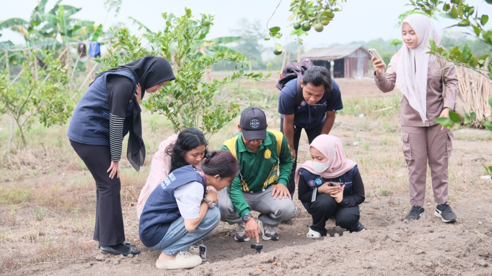
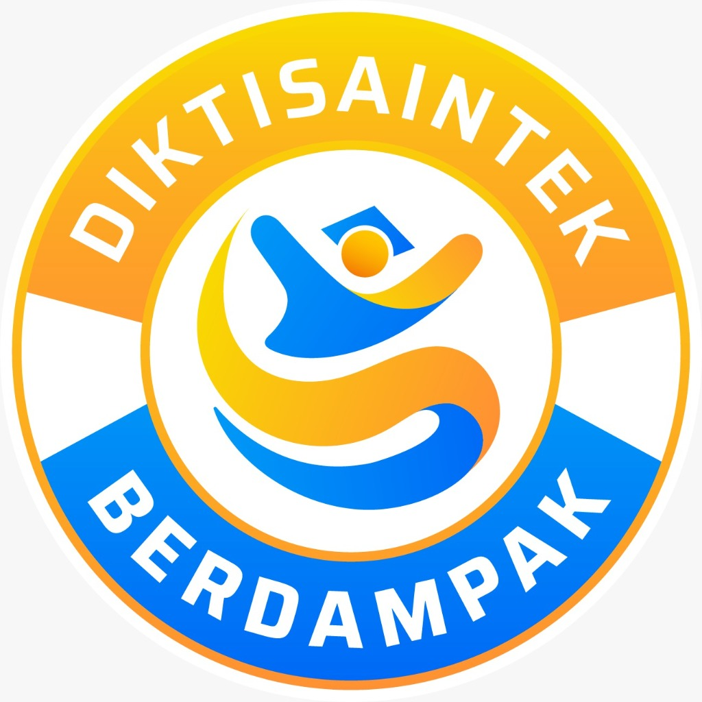
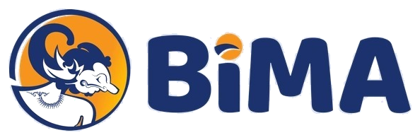
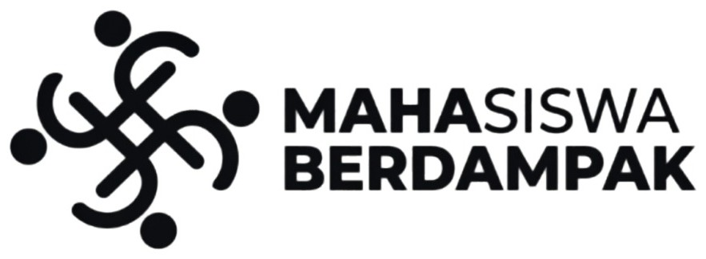
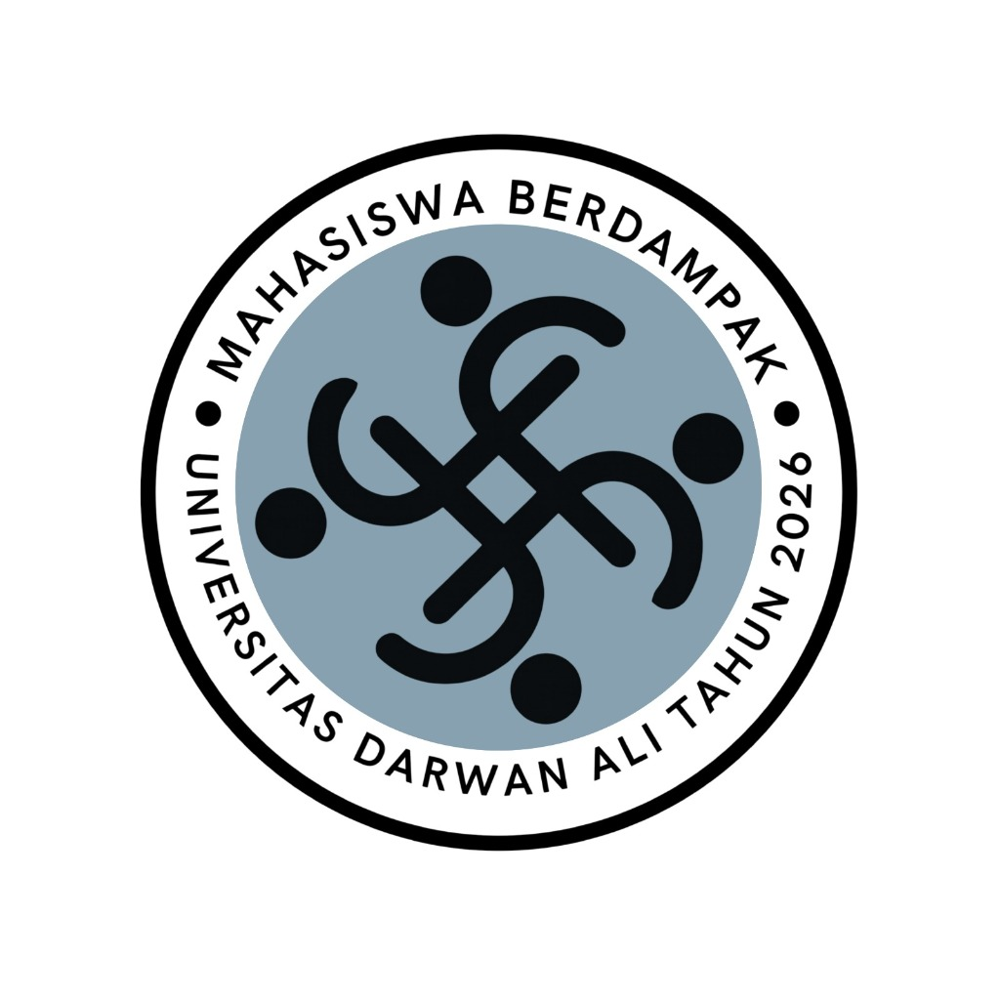
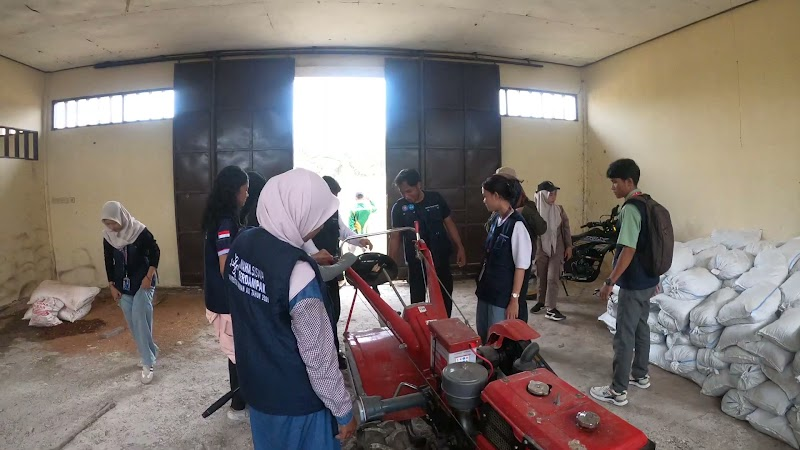
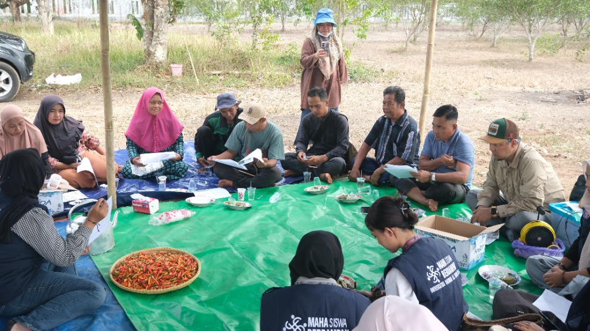
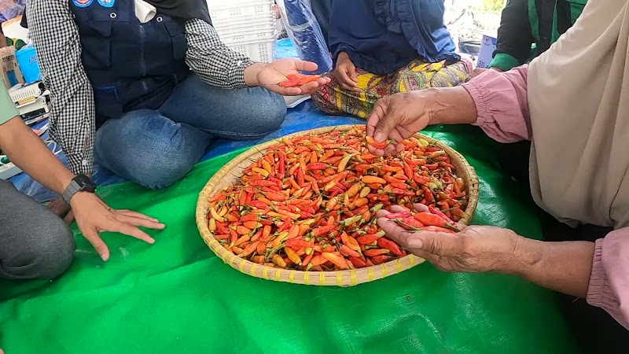

Kemandirian Hortikultura, Kesejahteraan Bersama.
Kelompok Tani Mekar Jaya (KTMJ) merupakan wadah resmi partisipasi, aspirasi, dan pemberdayaan petani swadaya-mandiri di Desa Sumber Makmur, Kecamatan Mentaya Hilir Utara, Kabupaten Kotawaringin Timur. Berfokus pada tanaman hortikultura unggulan cabai dan jeruk, kami menjalin kemitraan hulu-hilir, memfasilitasi saprodi, serta meningkatkan kesejahteraan seluruh anggota.
Kelompok Tani Mekar Jaya (KTMJ)
Disahkan 19 Januari 2026 • Kades Bpk. Supriyo
8 Foto & 6 Video Dokumentasi Asli
Budidaya Cabai Rawit & Uji Sensor Tanah Kebun Jeruk
Program Mahasiswa Berdampak 2026 • Universitas Darwan Ali & Kemendiktisaintek




Belanja Langsung dari Petani Mekar Jaya
Sayuran & cabai segar hasil panen anggota KTMJ Desa Sumber Makmur. Pilih produk, masukkan ke keranjang, lalu kirim pesanan — pembayaran & pengiriman diatur langsung lewat WhatsApp.
info Harga dapat berubah mengikuti kondisi panen & harga pasar. Total akhir, ongkir, dan cara pembayaran dikonfirmasi langsung oleh Pak Pur via WhatsApp.
Aktivitas Nyata Petani Mekar Jaya
Geser ke samping untuk melihat 8 foto dokumentasi asli berukuran besar serta tonton 6 rekaman video kegiatan lapangan di Desa Sumber Makmur.
Video Dokumentasi Kegiatan KTMJ Mekar Jaya
Pilih salah satu dari 6 rekaman video kegiatan pada daftar putar untuk memutar langsung dokumentasi budidaya cabai rawit, pengujian tanah, sortasi panen, dan gudang alsintan.
Pemeliharaan & Pemetikan Buah Cabai Rawit di Lahan Petani
Dokumentasi jarak dekat perawatan tanaman dan pemetikan buah cabai rawit segar langsung dari pohon oleh petani anggota Kelompok Tani Mekar Jaya.
Profil & Dasar Pembentukan KTMJ
Berawal dari Berita Acara Pembentukan pada Senin, 19 Januari 2026, Kelompok Tani Mekar Jaya (KTMJ) menyatukan langkah petani Desa Sumber Makmur menjadi organisasi tani yang swadaya dan mandiri.
Berdasarkan Keputusan Kepala Desa Sumber Makmur Kecamatan Mentaya Hilir Utara Nomor /KPTS/SM-MHU/I/2026, Kelompok Tani (KTMJ) "Mekar Jaya" dibentuk sebagai wadah resmi bagi petani dalam menyampaikan aspirasi serta melaksanakan program pembangunan pertanian, khususnya di bidang Tanaman Hortikultura.
Sebagai organisasi yang bersifat swadaya dan mandiri berlandaskan AD/ART, KTMJ Mekar Jaya berperan aktif menjalin kerjasama dengan pemerintah (Dinas Pertanian dan Ketahanan Pangan Kab. Kotawaringin Timur serta BPP Bagendang) maupun pihak ketiga, memfasilitasi penyediaan kredit/simpan pinjam, subsidi benih, pupuk, serta bantuan teknis budidaya dan pascapanen komoditas cabai dan jeruk.
Fokus Komoditas Petani: Cabai & Jeruk
Cabai Rawit & Cabai Merah
Dikelola dengan perawatan intensif, pemetikan tepat matang, serta proses sortasi kualitas (grading), penimbangan digital, dan pengemasan untuk menjaga mutu jual hasil panen anggota.
Jeruk Kebun Segar
Budidaya tanaman jeruk dengan pengujian pH & kesuburan tanah secara berkala, pemeliharaan tajuk teratur, serta penguatan distribusi panen buah segar bersama kelompok tani.

Komposisi Kepengurusan & Anggota KTMJ (2026–2029)
Ditetapkan di Desa Sumber Makmur pada tanggal 19 Januari 2026 oleh Kepala Desa Sumber Makmur (Bpk. Supriyo).
Bpk. Rosidin
Penanggung Jawab Umum KTMJ Mekar Jaya
Bpk. Muhlisin
Tata Usaha, Persuratan & Pendataan Anggota
Bpk. Samsul Huda
Pengelolaan Keuangan & Kas AD/ART
Bpk. Purwadi
Bidang Peternakan dan Perikanan
Bpk. Bejo
Bidang Perkebunan Tanaman Pangan dan Hortikultura
Bpk. Sukardi
Bidang Humas dan Kerjasama
Ibu / Bpk. Hartatik
Unit Simpan Pinjam Kelompok

Visi & Misi Kelompok (2026–2029)
Arah strategis yang memandu setiap musyawarah tani, pengelolaan kebun cabai dan jeruk, serta kemitraan usaha tani.
"Mewujudkan Kelompok Tani Mekar Jaya (KTMJ) yang swadaya, mandiri, dan berdaya saing sebagai wadah aspirasi serta pengembangan pertanian tanaman hortikultura (cabai dan jeruk) demi kesejahteraan petani Desa Sumber Makmur."
- 1 Pengembangan Pertanian Hortikultura: Meningkatkan fungsi dan peran aktif petani dalam budidaya tanaman hortikultura unggulan cabai dan jeruk.
- 2 Fasilitasi Kredit, Saprodi & Bantuan Teknis: Memfasilitasi penyediaan kredit/simpan pinjam, subsidi benih, pupuk, serta peralatan pertanian bagi anggota.
- 3 Kemitraan Pemerintah & Pihak Ketiga: Menjalin kerjasama erat dengan Pemkab Kotawaringin Timur, Dinas Pertanian, BPP Bagendang, dan mitra pasar.
- 4 Kemandirian & Swadaya Organisasi: Mengelola kelompok tani secara transparan, swadaya, dan mandiri berlandaskan AD/ART Kelompok Tani Mekar Jaya.
Program Kerja Pokok KTMJ
Inisiatif operasional yang dijalankan sesuai pembagian bidang pada SK Kepengurusan KTMJ Mekar Jaya 2026–2029.
Budidaya Cabai, Jeruk & Subsidi Saprodi
Dikoordinasikan oleh Bpk. Bejo untuk memfasilitasi penyediaan subsidi benih, pupuk, perawatan kebun, serta penanganan pascapanen.
Kemitraan PPL, Kampus & Pemasaran
Dikoordinasikan oleh Bpk. Sukardi untuk menjalin kemitraan bersama BPP Bagendang, Dinas Pertanian Kotim, serta jalur pemasaran hulu-hilir.
Fasilitasi Kredit & Kas Swadaya Tani
Dikelola oleh Ibu/Bpk. Hartatik bersama Bendahara (Bpk. Samsul Huda) untuk permodalan usaha tani mandiri berdasarkan AD/ART.
Integrasi Usaha Tani, Ternak & Ikan
Dikoordinasikan oleh Bpk. Purwadi guna memperkuat ketahanan ekonomi anggota dan sinergi pemanfaatan pupuk organik kebun.

Hubungi Kelompok Tani Mekar Jaya
Untuk informasi kemitraan hasil panen komoditas cabai dan jeruk, koordinasi penyuluhan, atau komunikasi kelembagaan, silakan menghubungi kontak resmi kami di bawah ini.
Sekretariat & Wilayah Desa:
Desa Sumber Makmur, Kecamatan Mentaya Hilir Utara, Kabupaten Kotawaringin Timur, Kalimantan Tengah.
Nomor HP / WhatsApp Narahubung:
+62 812-5670-5184 — Pak Pur - Anggota
Ketua KTMJ: Bpk. Rosidin • Sekretaris: Bpk. Muhlisin
Email Resmi
ktmekarjaya26@gmail.comDesa Sumber Makmur, Kec. Mentaya Hilir Utara
Kab. Kotawaringin Timur, Kalteng • 2°43'23"S, 112°53'45"E